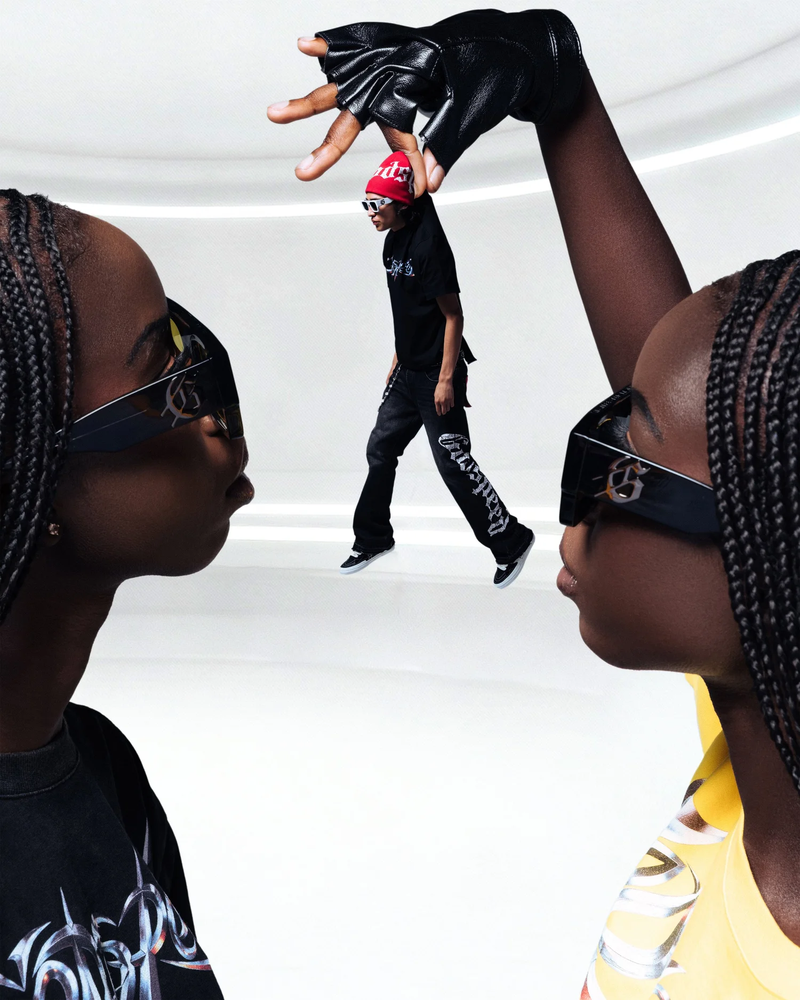
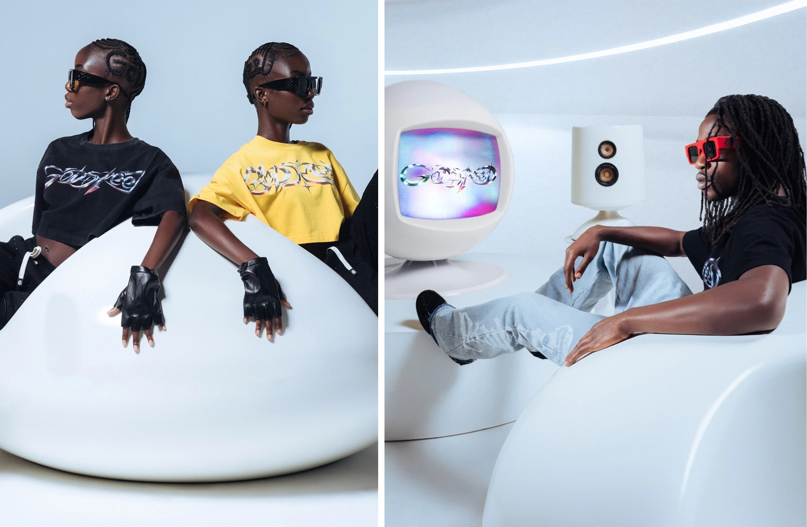
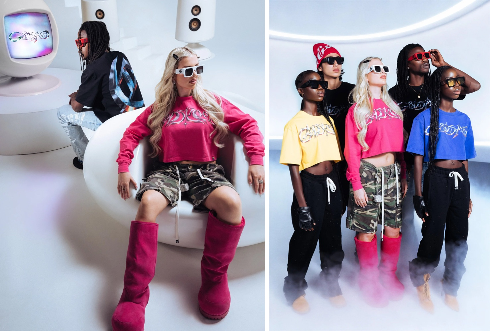
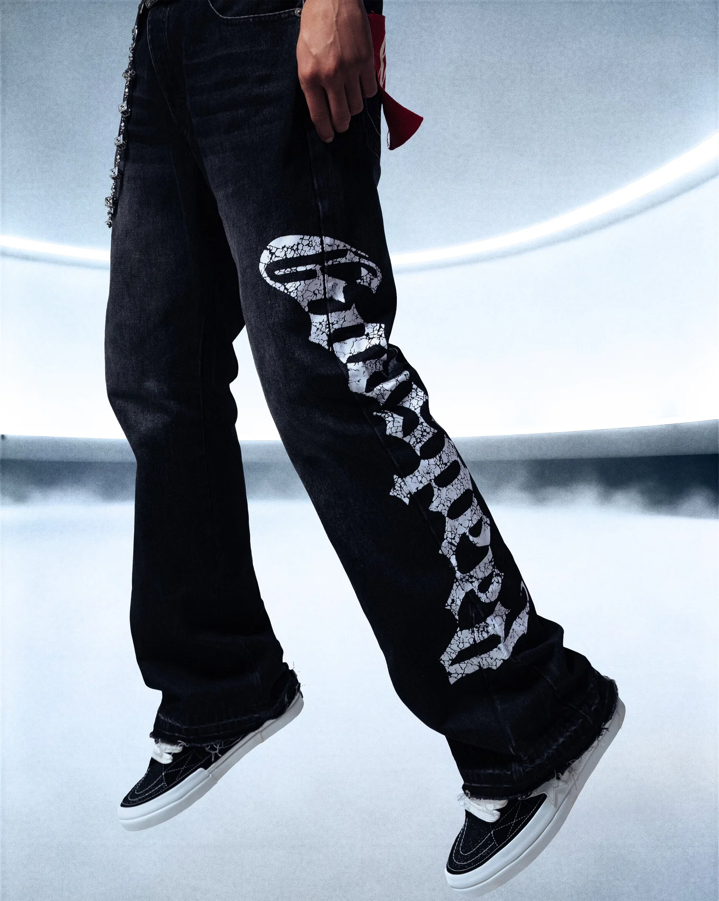

Project 08 — Commercial Film / Creative Direction & Production
Godspeed
About the project
PAZL® directs, writes and produces art-driven visuals for commercials, music videos and trailers. For Godspeed, the studio directed and produced the Supercar Run commercial and directed and photographed the Godspeed editorial.
Translating a client's vision into compelling visuals is the foundation of every campaign we build, and of the trust that follows.




Credits
- Creative direction & production
- PAZL®
- Direction
- Fred Saint Foster
- Photography
- Fidias Desir
- Client
- Godspeed